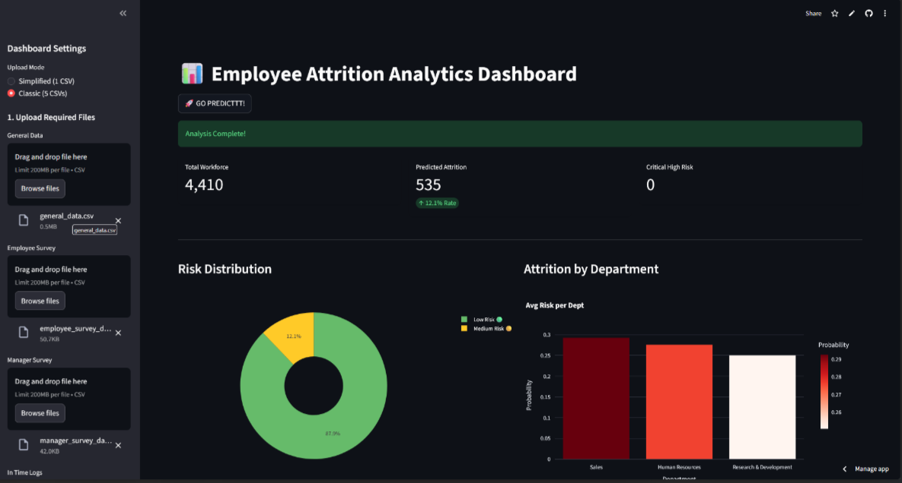
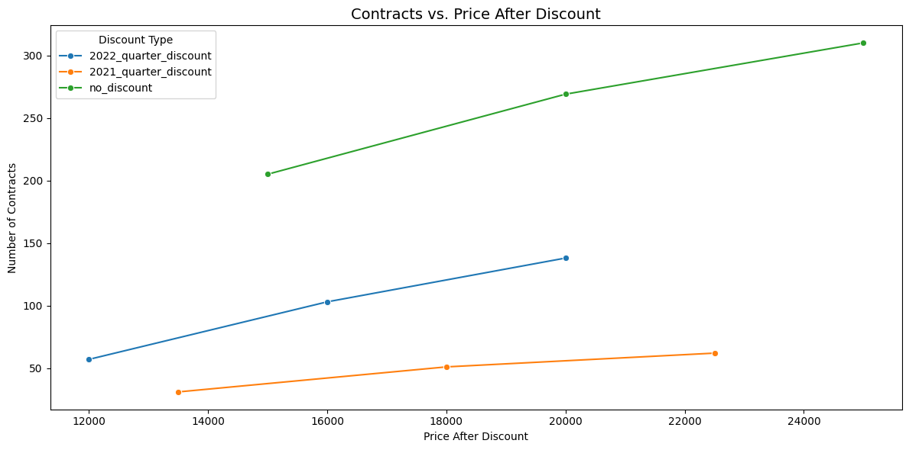
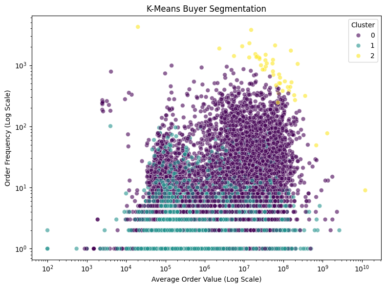
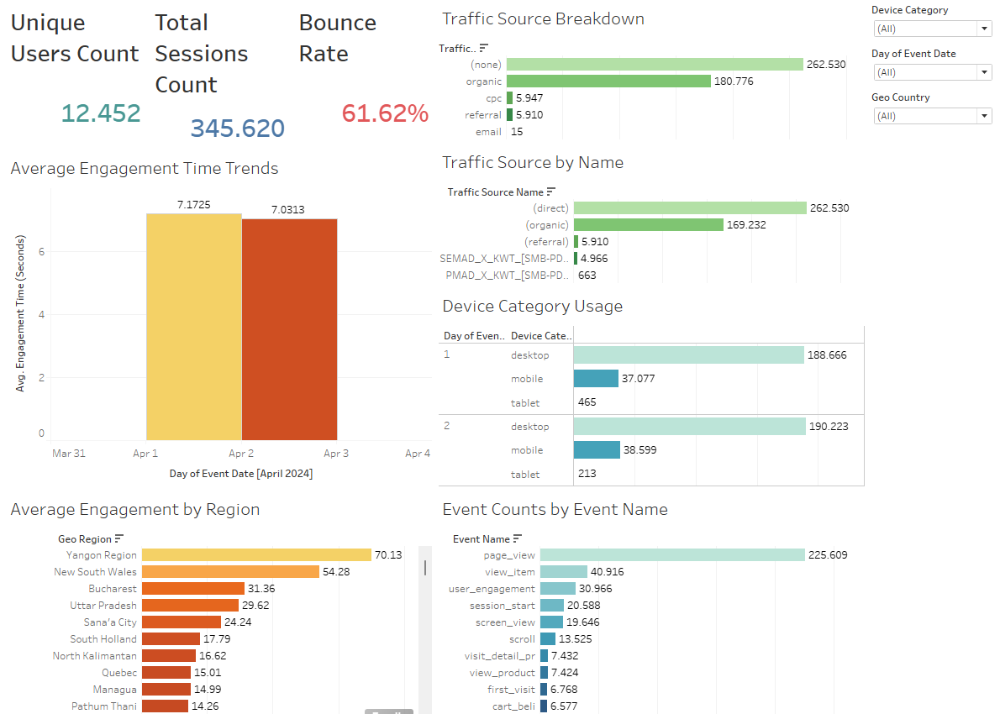

Developed an early warning predictive system to identify employees at risk of attrition using machine learning.
Performed extensive exploratory data analysis, feature engineering, and model evaluation to generate actionable
insights on employee turnover drivers. Evaluated multiple classification models and implemented the most effective
model to support HR decision-making and retention strategies.
Tools: Python, Scikit-learn, Pandas, Feature Engineering, Classification Modeling

Developed a Random Forest-based credit scoring model to classify customer investment profiles using behavioral and demographic features.
Performed full data preprocessing, feature selection, and exploratory analysis in Python, reducing 18 variables to 8 key predictors
while achieving 85% model accuracy.
Tools: Python, Scikit-learn, Pandas, Tableau, Machine Learning

Analyzed subscription pricing sensitivity across 2021–2022 contract data.
Used SQL (BigQuery) to join and extract finalized contracts before aggregating demand and revenue metrics.
Elasticity modeling was conducted in Python to evaluate price responsiveness across subscription tiers,
generating data-driven pricing strategy recommendations.
Tools: SQL (BigQuery), Python, Pandas, Statistical Analysis

Performed unsupervised clustering on marketplace transaction data to segment customers based on GMV, order frequency,
voucher usage, and recency. Engineered analytical features and applied K-Means clustering in Python to identify
actionable customer groups for targeted marketing strategies.
Tools: Python, Pandas, Scikit-learn, K-Means, Feature Engineering

Designed a performance monitoring dashboard using Google Analytics data to track user behavior, traffic sources,
conversion funnel progression, and session performance. Delivered KPI-focused insights for Sales & Marketing
teams to support data-driven decision-making.
Tools: Google Analytics, Data Visualization, KPI Monitoring